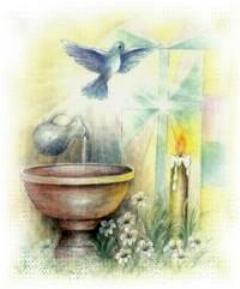

A Iniciação constitui um aprendizado prático
e teórico da religião. Não apenas do
conhecimento intelectual da Doutrina, mas
também, um aprendizado de ritos e de práticas de vida.
O Catecismo da Igreja Católica estabelece que
“a Iniciação Cristã deverá comportar alguns
elementos essenciais: o anúncio da Palavra, o acolhimento do Evangelho proporcionando
uma conversão, a profissão de fé, o Batismo, a efusão do Espírito Santo (a Crisma), e o acesso a
Comunhão Eucarística”.
O Sacramento do Batismo abre a porta para
uma vivência cristã, porque insere a pessoa no Mistério Pascal de Cristo, lhe
introduz na Igreja e lhe concede acesso ao Sacramento da Eucaristia.
São três os Sacramentos que compõe
a Iniciação Cristã: o Batismo, a Crisma e a Eucaristia.
O objetivo que deve levar as pessoas
a se interessarem pela Iniciação Cristã, não pode e não deve se basear numa
fundamentação exterior, ou seja, por tradição, porque é bonito, ou porque todas
as pessoas fazem. Mas, sobretudo, deve conduzir a uma meditação sobre a
realidade Divina que por certo irá gerar uma motivação interior, como ensina o
Novo Testamento: porque a Vida Cristã deve se constituir numa “resposta” autêntica de
nossa fé ao “chamamento”
de Deus.
A preparação dos candidatos realiza-se
através de um conjunto de instruções, de orações e práticas ascéticas, que recebe
o nome de “Catecumenato”.
No século III, em Roma, este processo
costumava durar vários anos e preparava as pessoas para receberem durante a
Vigília Pascal, os três Sacramentos: primeiro o Batismo, depois a Crisma e a seguir,
a Primeira Eucaristia (Primeira Comunhão).
Batismo de Adultos
Inicialmente eram Batizadas somente pessoas
adultas, porque assim, elas poderiam participar, entender e assimilar todas as
instruções.
Entretanto, a começar pelos locais distantes,
em terras de Missões Cristãs, as autoridades perceberam a dificuldade para instruir
devidamente os interessados e decidiram Batizar as crianças, filhos de pais
cristãos. Na continuidade, os Pais com instrução religiosa, assumiam perante a
Igreja, também o compromisso de educar religiosamente os seus filhos. E dessa
forma, aos poucos, o rito específico de Iniciação Cristã de Adultos foi sendo
abandonado. Quando eram Batizados adultos, seguia-se o rito do Batismo de
Crianças e todos os passos se reduziam a uma única celebração, ou seja,
Batizando-se Adultos e Crianças juntos no mesmo rito.
Todavia, o Concílio Vaticano II restaurou
o Rito da Iniciação Cristã de Adultos, o qual deveria ser usado nos casos de Batismo
de pessoas que já tivessem atingido o uso da razão. E determinou ainda, que o Rito
incluiria toda a Liturgia do Catecumenato, com a Celebração do Sacramento do
Batismo, da Crisma ou Confirmação e da Eucaristia, ou seja, o candidato seria
instruído ao longo dos anos e receberia os três Sacramentos.
Dessa forma, a preparação e iniciação do
neo-convertido se processaria gradativamente no seio da comunidade eclesial,
através de encontros com a equipe de catequese ao longo de 2 a 4 anos, refletindo
com os catecúmenos a excelência do Mistério Pascal de Cristo, renovando
e robustecendo a sua própria conversão, além de induzi-los pelo seu exemplo,
a obedecer com maior respeito e generosidade aos apelos do Espírito
Santo.
Distinguem-se quatro tempos no itinerário
da preparação de Adultos: o pré-catecumenato, o segundo tempo que é dedicado
essencialmente a Catequese, no terceiro tempo segue com a purificação e
iluminação interior, com seus ritos específicos e termina no quarto tempo
com a “mistagogia” durante todo
o período pascal, com o aprofundamento da catequese e das boas
relações com a comunidade fiel.
Então deve ficar claro, que no Rito renovado
da Iniciação Cristã de Adultos, estabelecido no Concílio Vaticano II, se prevê que
o catecúmeno seja preparado para receber ao mesmo tempo os três Sacramentos:
o Batismo, a Crisma ou Confirmação e a Eucaristia.
Seguindo essa orientação
da Igreja, hoje não mais se pode conceber o Batismo de um Adulto seguindo o Rito
de Batismo das Crianças, ou junto com elas. Nem tem sentido Batizar um Adulto
depois de uma “rápida preparação individual”
, para que ele possa receber o Sacramento
do Matrimônio na Igreja.
Batismo de Crianças:
Vemos na Sagrada Escritura que há sempre
um processo de conversão em resposta à Palavra de Deus. Só depois é que acontece
o rito ou a celebração da salvação pela fé: através do Batismo. O Batismo
constituía então como um selo, um sinal de justificação e de pertença ao grupo
daqueles que pertenciam a Igreja. Realizava-se o que Cristo ensinara:
“Quem crer e for batizado será salvo”.
Palavra de Deus. Só depois é que acontece
o rito ou a celebração da salvação pela fé: através do Batismo. O Batismo
constituía então como um selo, um sinal de justificação e de pertença ao grupo
daqueles que pertenciam a Igreja. Realizava-se o que Cristo ensinara:
“Quem crer e for batizado será salvo”.
Então, estes elementos fundamentais: ouvir
a mensagem, responder pela fé, pela conversão do coração e uma vida conforme a
nova dignidade de batizado, era normalmente o que ocorria no Batismo de Adultos.
Nos primeiros séculos havia uma preparação que durava até três anos e o Batismo
não era realizado por “infusão” de água e com as palavras do celebrante “Eu te batizo”, como é atualmente. O catecúmeno
descia até a piscina e lá, dentro d’água, professava três vezes sua fé, respondendo
às perguntas do ministro celebrante: “Crê
em Deus Pai?” Creio;“Crê em Nosso Senhor Jesus Cristo?”
Creio; “Crê no Divino Espírito Santo?”
Creio, enquanto, após
cada resposta, o batizando era mergulhado na água.
Sedimentadas as explicações anteriores
alguém poderia lançar uma pergunta:
"Sendo o Batismo um Sacramento de fé, uma resposta de fé e uma celebração
da redenção na fé, como se justifica o Batismo de Crianças? As crianças não
tem entendimento e nem razão para professar sua fé?"
Ora, mas se a Igreja instituiu e o pratica é
porque certamente, como vamos ver, ele tem sentido.
A Igreja se fundamenta na realidade de
que existem duas vias de justificação em Cristo:
1ª) Para os que têm o uso da razão são
necessários a “Fé”
e o “Batismo”.
(É o caso do Batismo de Adultos)
2ª) Para as crianças, o Batismo é realizado
na “Fé” da Igreja
(dos Pais e Padrinhos cristãos, e dos fieis crentes que são membros da Igreja).
Assim, as crianças são Batizadas pela
“lei da solidariedade e da representação”. Isto porque, o Plano de Deus da Salvação, primordialmente, observa as leis
naturais. Na vida natural, a criança depende em tudo dos pais e é representada por eles,
até juridicamente. Deus dá vida à criança que é gerada pelos Pais, que a
alimenta, que lhe dá as vestes, educa e conserva a sua existência. Em tudo a
criança é solidária com os Pais.
Algo semelhante acontece no plano religioso.
Os Pais que receberam o Sacramento do Matrimônio, que crêem e seguem Cristo, são
representantes e mediadores dos filhos diante do Senhor e por isso, naturalmente
querem colocá-los ao lado de Jesus, entre os justificados, fazendo parte
daqueles que pela “água” e o “Espírito Santo” são regenerados e fazem parte da comunidade dos Santos.
Assim sendo, após o Batismo, os Pais continuam
exercendo sua missão mediadora, realizando uma ação sacerdotal em favor dos
filhos, levando-os a rezarem e a praticarem o bem, até que atinjam o uso da
razão e possam fazer seu ato de fé pessoal, assumindo de acordo com sua própria
vontade, o Batismo celebrado pela Igreja quando eram crianças.
Para que tudo isto seja possível é necessário
que os Pais e Padrinhos sejam cristãos, tenham recebido o Sacramento do
Matrimônio e frequentem regularmente a Igreja, participando das Santas Missas,
revelando a sua fidelidade a Deus.

 Próxima Página
Próxima Página
Retorna ao Índice